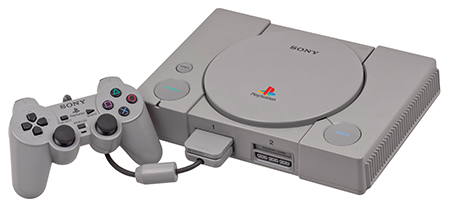
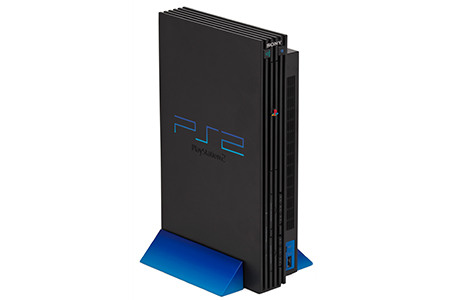
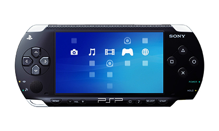
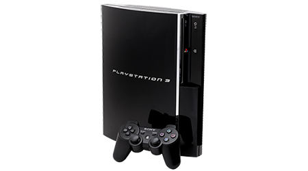
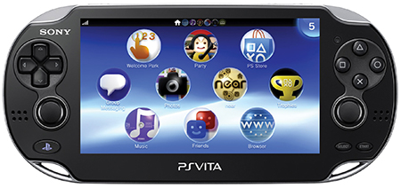
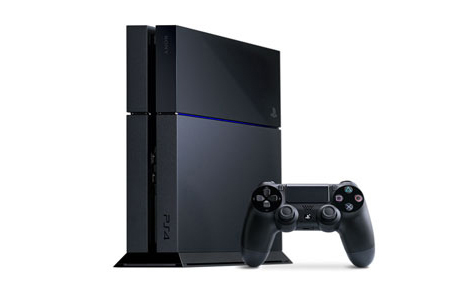

Long before there was such a thing as affordable CD-ROM gaming or 3D polygonal graphics, Sony Computer Entertainment Inc. (SCEI) set the not-too-humble goal of creating a gaming platform that would become as pervasive as the VCR and change the industry forever. In 1994, Sony Computer Entertainment America (SCEA) was founded as the North America division of Sony Computer Entertainment Inc. Taking approximately four years to develop, the PlayStation® game console was introduced in the United States in 1995. The launch of the PlayStation® brand was a sensation. In the very first weekend, more than 100,000 units were sold. In the first six months, over a million were sold. In April 1997, with nearly 4 million PlayStation® game consoles in North America, we found a way to strengthen our bond with PlayStation® owners even more. Our interactive relationship marketing program, PlayStation® Underground, gives us the opportunity to recognize and reward our loyal gamers. Members of the PlayStation®Underground can feel as though they belong to a subculture of intense gamers by experiencing new game challenges and getting the scoop on upcoming games, merchandise, and special offers.

The company next set its sights on development of the PlayStation®2, which became available to consumers in November 2000. With its incredible power and the exciting, and exclusive ability to play both CDs and DVD movies, this new system was unstoppable, making it possible for smooth, lifelike animation to be shown in real time as well as helping to establish DVD as the standard optical disk media format worldwide. Now in the tenth year of its product lifecycle, PlayStation®2 is still going strong and continues to be one of the world’s most popular video game systems, with more than 50 million units sold in North America alone. During its lifespan, PS2™ not only has pushed video gaming to the forefront of entertainment, but also introduced the concept of an entertainment system becoming a hub in the living room. To-date the PlayStation®2 system has served as the entertainment centerpiece in many living rooms, accounting for one in three homes across the U.S.

In March 2005, the PlayStation®Portable (PSP®) was launched in North America, bringing an unparalleled gaming experience to a handheld platform. PSP® offers consumers many reasons to take their entertainment on the road—whether it’s to watch a movie, listen to music, view their photos, play games or connect to the Internet. In 2009, we upped the ante, making it even easier for consumers to both take and download content on the road with the introduction of the PSP®go. PSP®go represents the latest evolution of the PlayStation®Portable, specifically designed for the digitally savvy consumer. The PSP®go leverages PlayStation®Network and digital content exclusively, offering 16GB of internal memory and expandable storage for all the latest in exclusive games as well as videos, music, and photos.

On November 17, 2006, Sony Computer Entertainment America revolutionized the way games are played and developed by releasing the PlayStation®3 (PS3™) computer entertainment system. The PlayStation®3 system reset the bar for entertainment by utilizing a combination of Cell and RSX™ processors, a state-of-the-art Blu-ray player and a pre-installed hard disk drive (HDD). Equipped with basic input/output ports, PS3™ supports a broad range of displays from conventional NTSC/PAL standard TVs to the latest full HD (1080i/1080p) flat panel displays, offering the joy of the most advanced computer entertainment content to homes around the world. These technological advancements coupled with its all-in-one entertainment solution made PS3™ the most advanced computer system, which served as a platform to enjoy next-generation games and the best in home entertainment on the market.
Today PS3™ provides an even more incredible value, functioning as the true “entertainment hub” for the living room and the “must-have” console for gamers. In addition to best in class content offerings, PS3™ combines one of the industry’s best Blu-ray players with built-in benefits such as Wi-Fi and an Internet browser, 160GB or 320GB of storage for photos, movies and music, free access to the PlayStation®Network and future-proofing firmware updates -- all in one device.
Also in November of 2006 came the launch of PlayStation®Network (PSN). Since launch, PSN has evolved into a true online entertainment hub with more than 90 million registered accounts worldwide and continues to grow with tons of great new content and services, delivering a seamless connected gaming and entertainment experience across multiple devices and platforms. PlayStation®Network delivers more ways to instantly play, watch, stream, listen, chat and share, offering the best in games, TV and movies, sports and music. PSN also offers PlayStation®Plus, a subscription services that allows users to get the most out of their PS3™ console by offering subscribers free games, huge discounts and great exclusives.

On February 22, 2012, SCEA launched the revolutionary PlayStation®Vita. Deep and immersive gaming is at the core of PlayStation’s DNA, and PS Vita is the latest embodiment of this vision. This system offers a revolutionary combination of rich gaming and social connectivity within a real world context. Wi-Fi and 3G network connectivity on PS Vita, together with various applications including Facebook, foursquare, Skype and Twitter, enable infinite possibilities for users to "encounter", "connect", "discover", "share" and "play" with friends wherever they are.
Within the device are a range of features that provide a genuinely cutting-edge, next generation ultimate portable entertainment experience including a 5-inch OLED front display screen, front touch screen and rear touch pad, front and rear cameras, dual analog sticks and Wi-Fi and 3G network connectivity.

On November 15, 2013, PlayStation®4 hit store shelves to massive critical and consumer acclaim. The system brought with it cutting-edge visuals, a deep integration with PlayStation®Network for the smoothest PlayStation® online experience yet, and new social features like the revolutionary Share button. The PS4™ system is centered around a powerful custom chip that contains eight x86-64 cores and a state of the art 1.84 TFLOPS graphics processor with 8 GB of ultra-fast GDDR5 unified system memory, easing game creation and increasing the richness of content achievable on the platform. The end result is new games with rich, high-fidelity graphics and deeply immersive experiences.

The DualShock®4 Wireless Controller for PlayStation®4 defines the next generation of play, combining revolutionary new features with intuitive, precision controls. Improved analog sticks and trigger buttons allow for unparalleled accuracy with every move while innovative new technologies such as the multi-touch, clickable touch pad, integrated light bar, and internal speaker offer exciting new ways to experience and interact with your games. And with the addition of the Share button, celebrate and upload your greatest gaming moments on PlayStation®4 with the touch of a button.